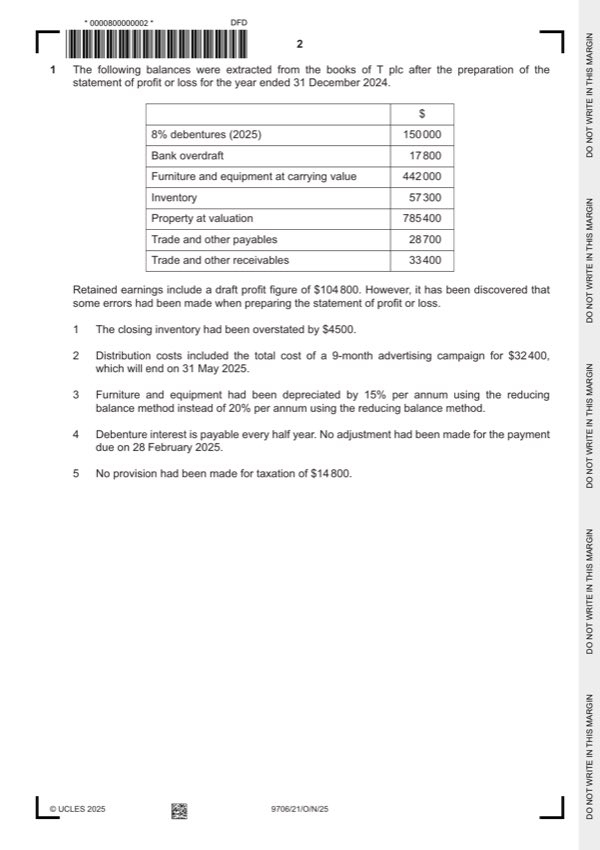

Question 1

Original paper page 2
Part 1(a) — solution
- W1: prepaid advertising 5/9 $32 400 = $18 000
- 100 = $520 000 (1)
Mark points
- W1: prepaid advertising 5/9 $32 400 = $18 000
- 100 = $520 000 (1)
Part 1(b) — solution
- W1 Opening share capital: 900 000 3/5 = 540 000 (1)
- W2 Dividend paid: 900 000 2 = 1 800 000 shares $0.03 = $54 000 (1)
Mark points
- W1 Opening share capital: 900 000 3/5 = 540 000 (1)
- W2 Dividend paid: 900 000 2 = 1 800 000 shares $0.03 = $54 000 (1)
Part 1(c) — solution
Prepare the statement of financial position at 31 December 2024. 9
T plc
Statement of financial position at 31 December 2024
Assets $
Non-current assets
Property 680 000
Furniture and equipment at carrying value 416 000 (1)
Mark points
- Include the ideas shown in the solution above.
Part 1 — solution
Answer: 104 200
096 000 (1)OF
Current assets
Inventory 52 800 (1)
Trade and other receivables 51 400 (1)
104 200
Total assets 1 200 200 }*
Equity
Share capital 900 000
Retained earnings 84 900
Total equity 984 900 (1) OF
Current liabilities
Debentures 150 000 (1)
Trade and other payables 32 700 (1)
Taxation 14 800
(1)
Bank overdraft 17 800
Total liabilities 215 300
Total equity and liabilities 1 200 200 (1)}*
(1)}* both totals should be the same
University Press & Assessment 2025 Page 9 of 16
9706/21 Cambridge International AS & A Level – Mark Scheme October/November
PUBLISHED 2025
Mark points
- Correct result: 104 200
Part 1(d) — solution
Advise the directors which option they should choose. Justify your choice by 7
considering the advantages and disadvantages of both options.
Option A (max 4)
For
Will be a permanent source of finance/no repayment (1)
Will not affect profits (1)
Dividend payments are discretionary/variable (1)
Net assets are increased (1)
Against
Will the issue be successful/fully subscribed (1)
Will affect control of the company/voting rights (1)
Shareholders may expect dividends (1)
Cost and time involved in issuing prospectus/advertising etc. (1)
Option B (max 4)
For
No impact on control of company as no voting rights/decision making (1)
No impact on profit distribution as no change in control (1)
Temporary source of finance/repayable (1)
Have until 2030 to repay/can budget/plan for repayment (1)
Against
They have to finance the redemption of the existing debenture/already have a debenture
(1)
Debenture interest will reduce profits (1)
Debenture interest will have to be paid each year/finance costs increase (1)
Liabilities/gearing increase (1)
Loan/need to repay (1)
May require security (1)
It may be difficult to obtain another debenture (1)
Accept other valid responses
Max 6 for comments on both options
Decision supported by a comment (1)
Mark points
- Include the ideas shown in the solution above.